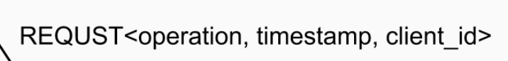
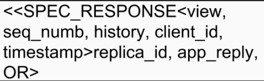
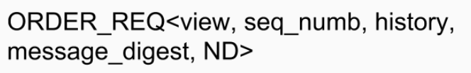

PBFT has been deployed in several systems. Zyzzyva introduced an optimistic linear path into PBFT, which was utilized in several systems. The optimistic path has linear complexity, while the leader replacement protocol remains O(n3).
Zyzzyva is a leader-based consensus protocol with speculative execution which means uncommitted execution. The committed execution has moved to the client-side which is the main contribution in Zyzzyva. The PBFT is an expensive protocol and in Zyzzyva paper there is no need to have PBFT on board to reach an agreement on a single value. Note, the state machine in a simple term is the program variables and commands. The challenge in Zyzzyva is to make sure that the client's response becomes stable. The client expects the request's stabilization but not being committed, unlike many traditional BFT protocols.
Zyzzyva has two scenarios for each round. First is called ideal execution where client starts its timer and sends its request to primary and receives replies from 3f+1 replicas before the client's timer is fired where f is the faulty node and 3f+1 is the total nodes in the system. The primary receives the client request and assigns a sequence number (n) to the request (r) and then forward it to all replicas. replicas (r) executes the request and appends it to its history. Finally, each replica sends a reply to the client. The client must receive enough history information with the replies from all replicas for eventually commit. Then, the client will accept the response and pass it to the application. If the client receives from 2f+1 to 3f+1, then the Zyzzyva move to the second stage of the protocol. It will form a commited-certificate that has to be sign by 2f+1 before the client accepting the responses for its request from 2f+1 replicas. If the speculative reply and history are stable, then the client uses the reply. Otherwise. the client waits until the systems converge on both stable reply and history. In the ideal execution of the protocol, replicas cannot determine that the request is committed and there will not be acknowledgment for replicas. Below you will see the client message to primary, primary to replicas, and replicas to the client.



You might already wondering about what is the advantage that Zyzzyva found of moving the commit phase to the client! Quote "Moving commit to client offers significant practical advantages comparing to many states of art protocol including PBFT. It will reduce cryptographic overheads and increases peak throughput by a factor of two to an order of magnitude with minimum latency." Zyzzyva is able to keep up costs while increasing throughput and decreasing latency from previous BFT protocols. See the table below.
You might already saw the similarity between PBFT and Zyzzyva in replication cost. In throughput, Zyzzyva and PBFT use batching when the load is high. The Zyzzyva critical path messages are lower bound and even better than PBFT. I will talk more about the perforamnce at the end of this article.
Zyzzyva consists of three sub-protocols; Agreement where protocol orders the requests for execution by the replicas. View change where protocol coordinates the election of a new primary when the current primary is faulty or the system is running slowly. The checkpoint where protocol limits the state that must be stored by replicas and reduces the cost of performing view changes.
Zyzzyva ensures the safety as follow; If a request with sequence number n and history hn completes, then any request that completes with a higher sequence number n' ≥ n has a history hn' that includes hn as a prefix. Zyzzyva ensures the liveness as follow; Any request issued by a correct client eventually completes.
Zyzzyva proceeds in a sequence of views with a dedicated leader for every view to maintain liveness of the protocol. If a sufficient number of replicas suspect that the current primary is faulty, then a view change occurs and a new primary elected. Every replica maintains the ordered history of the requests it has executed and a copy of the max commit certificate, the commit certificate was seen by (i) that covers the largest prefix of (i)s stored history. The highest sequence number of commit certificates is the committed history in the replica while follow history is speculative. Maintained state by each replica Ordered history Max Commit Certificate Checkpoint.
In agreement protocol, faulty execution, the client has to receive 2f+1 acknowledgments of commit certificate. A replica may only accept and speculatively executes requests in sequence number order but message loss or a faulty primary can introduce holes in the sequence number space. Replica (i) discards the order request message if sequence number (n) that less than or equals to the largest sequence number that accepted by replica (maxn) or n > (maxn + 1). Then, replica (i) sets a timer and sends a message to the primary to fill-hole. The primary ignores the request from another view. If no replies from primary to replica (i) and the timer is fired, replica (i) will broadcast fill-hole message for all replicas and initiate view change request when the timer fires. Any replica j received the request from (i) will send the corresponding request back to (i) if j received one. If the (i) received a conflict message form j's, it will be proof of misbehavior.
From the client-side, once the client received the responses, there are four possible cases. First, the client receives 3f+1 matching responses and completes the request. Second, the client received form 3f+1 to 3f matching responses, assembles a committed certificate, and transmits the commit certificate to the replicas. Then, replica receives the commit message form a client containing a committed certificate and acknowledges with a local-commit message. If the local history is consistent with the commit certificate then replica updates his maximum commit certificate if the certificate has a higher number. If local history has a hole, then
The client receives local commit messages from 2f+1 replicas and complete the request. If the client timer is fired for commit messages before 2f+1, then client resends its request to all replicas, which forward the request to the primary in order to ensure the request is assigned a sequence number and eventually executed.
View change sub-protocol is to elect a new primary, detect the faulty primary, Ensure no change in history. The correct replicas stop accepting a new message once it commits to view change. Correct replica commits to view change because it saw that primary is faulty or saw f+1 view change messages. In Zyzzyva, a correct replica does not abandon view v unless it is guaranteed that every other correct replica will do the same, forcing a new view and a new primary. Replica i broadcast "I hate the primary". I (i) receives from f+1 votes of replacing primary then it commits to a view change. Replica i will forward f+1 votes to all replica. Stop accepting new messages, send View change message, Send New View message. The case of the missing phase is to strengthen the condition under which a replica commits to a view change. Add a new phase to the view change protocol. The case of the uncommitted Request, Weaken the condition under which a request appears in the history included in the new-view message.
There are serveral optimizations to imorve perforamnce of Zyzzyva.
1- Replacing signatures with MACS. This will reduce the computational overhead of cryptographic operations.
2- Separating agreement from execution. 2f+1 replicas will be exection replicas and the remaining replicas are witness.
3- Request Batching.
As the number of clients increases, the Zyzzyva throughput scales better than PBFT with and without batching. Without batching, Zyzzyva achieves a peak throughput that is 2.7 times higher than PBFT due to PBFT’s higher cryptographic overhead (PBFT performs about 2.2 times more crypto operations than Zyzzyva) and message overhead (PBFT sends and receives about 3.7 times more messages than Zyzzyva). When the batch size is increased to 10, Zyzzyva’s peaks throughput increase to 86K ops/sec suggesting that the protocol overhead at the primary is 12µs per batched request. First, Zyzzyva requires fewer cryptographic Overall, the peak throughput achieved by Zyzzyva is within 35% of that of an unreplicated server that simply replies to client requests over an authenticated channel. Note that as application-level request processing increases, the protocol overhead will fall.
Latency in Zyzzyva uses fast agreement to drive its latency near the optimal for an agreement protocol—3 one-way message delays. The experimental results in Figure 4 show that Zyzzyva and Zyzzyva5 achieve significantly lower latency than the other agreement-based protocols, PBFT and HQ.
Fault Scalability, Figure 6 shows the peak throughputs of Zyzzyva, PBFT, HQ, and Q/U(reported throughput) with increasing number of tolerated faults for batch sizes of 1 and 10. Zyzzyva is robust to increasing f and continues to provide significantly higher throughput than other systems for the same reasons as explained in the throughput section. Additionally, as expected for the case with no batching, the overhead of Zyzzyva increases more slowly than PBFT with increasing f because Zyzzyva requires 2 + (3f + 1) cryptographic operations compared to 2 + (10f + 1) cryptographic operations for PBFT.
We believe that for these metrics, the most interesting regions are when f is small and when batching is enabled. Not coincidentally, Zyzzyva performs well in these situations, dominating all of the approaches with respect to load at the bottleneck server. Also, when f is small, Zyzzyva and Zyzzyva5 also have low message counts at the primary. As f increases, when batching is used, Zyzzyva and Zyzzyva5 are likely to remain attractive. One point worth noting is that message counts at the primary for Zyzzyva, Zyzzyva5, and PBFT increase as f increases, while server message counts are constant with f for Q/U and HQ.
Figure 8 compares throughput with increasing numbers of clients for Zyzzyva, Zyzzyva5, PBFT, and HQ in the presence of f backup server failures. For the case when f = 1, with one failure and no batching (b = 1), Zyzzyva and Zyzzyva5 provide 1.8 and 2.6 times higher throughput than PBFT, respectively, because of additional cryptographic and message overheads as described above. Note, I left talking about Zyzzyva5 for another blog.
Figure 9 compares throughput when Zyzzyva uses commit optimiation. See section 4.1 in the paper.